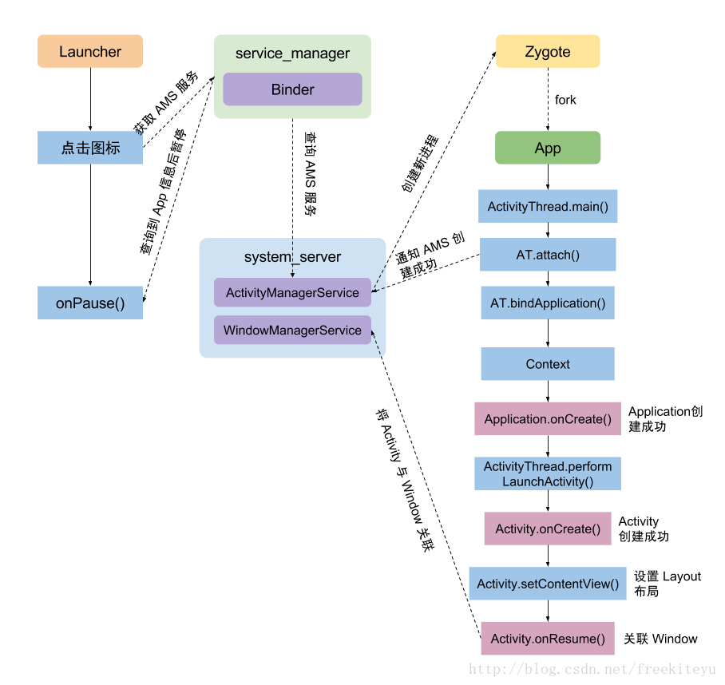
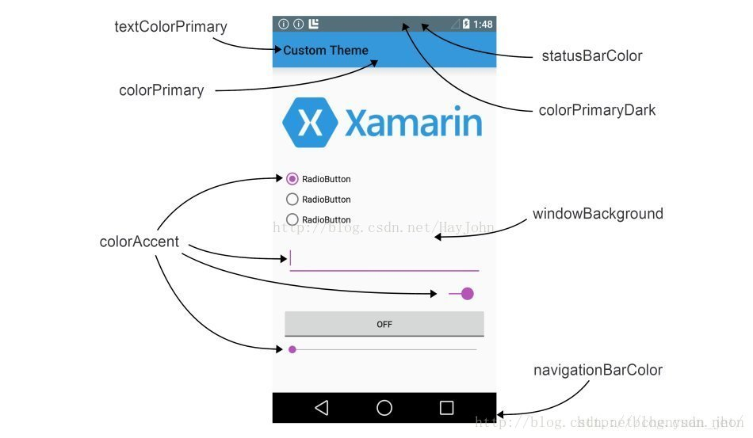

MediaPlayer 播放器

Fragment

Activity


点击应用图标后的流程

这里有一点需要注意，如果你的程序入口 Activity 设置成了 singleTask 则每次程序从后台到前台，必定会显示这个 Activity。如果这个 Activity 被销毁了，系统会重新生成对应的实例。
这是因为，点击桌面应用图标后，系统如果发现启动 Activity 对应的 task 存在就会激活这个 task，如果这个 task 不存在，就会创建这个 task 以及对应的 root activity。
Canvas

主题颜色
